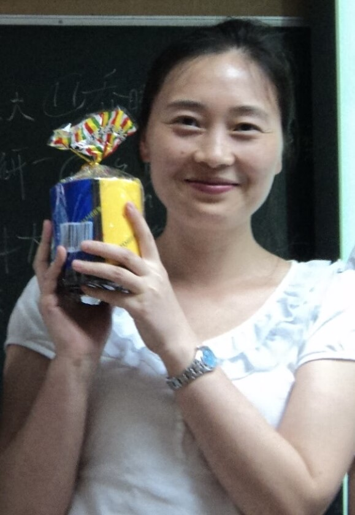
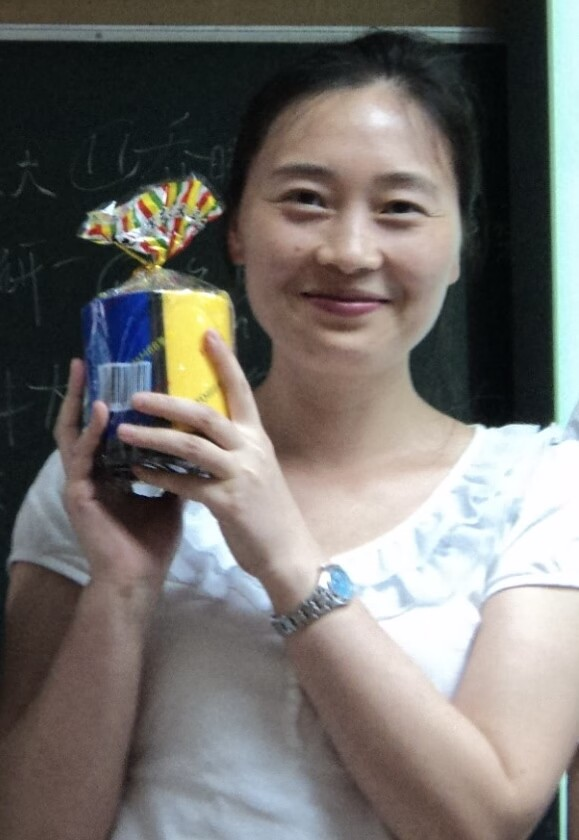

姓名: 李平
职称: 教授
院系: 计算机与软件学院
联系方式: pingkly@163.com
姓名: 李平
职称: 教授
院系: 计算机与软件学院
联系方式: pingkly@163.com
电子科技大学与德国波茨坦大学联合培养博士， 研究员，硕士生导师。香港理工大学博士后； 香港城市大学高级副研究员；四川省第十三批学术与技术带头人后备人选；ACM、中国计算机学会（CCF）专业会员，四川省人工智能专委会、自然语言处理专委会、大数据专委会委员。在IEEE TKDE、IEEE TNSE、New. J Phys.、 Phys.Rev.E、 Information Sciences等知名SCI期刊上发表SCI论文40余篇。主持国家自然科学基金项目2项，作为第一/第二合作人参与国家自然科学基金项目面上项目3项，主持四川省科技厅重点项目1项/省自然科学基金面上项目1项，授权国家发明专利16项；IEEE TNNLS、TCAS-I/II、TNSE、KBS、ESWA等多个国际知名期刊审稿人以及AAAI（18-22）等顶级会议PC Member。
图挖掘、图深度学习及其应用、自然语言处理
[1] Tianyi Gu, Kaiwen Huang, Jie Zhang, Kai Zhang and Ping Li（共同通讯作者）, "Fast Convolutional Factorization Machine with Enhanced Robustness," in IEEE Transactions on Knowledge and Data Engineering, 2021, early access, doi: 10.1109/TKDE.2021.3116352. （CCF A类，中科院二区）
[2] Guogen Tang, Ping Li（通讯作者）, Yupeng He, Yan Chen, Yuan Zhong, Fangji Gan, “Latent graph learning with dual-channel attention for relation extraction,” Knowledge-Based Systems, 252, 109471, 2022. （中科院一区）
[3] Wei Zhang, Yupeng He, Ping Li（通讯作者）, Yuan Zhong, Jin Zheng, “Graph regression for pressure peak prediction in fracturing processes,” Journal of Petroleum Science and Engineering, 213, 110323, 2022. （中科院二区）
[4] Yan Chen, Yulan Huang, Bo Miao, Yanchao Shi, Ping Li（通讯作者）, “Adaptive anomaly detection-based liquid loading prediction in shale gas wells,” Journal of Petroleum Science and Engineering, 214, 2022. （中科院二区）
[5] Biao Wang, Zhen Dai, Deshun Kong, Lanlan Yu, Jin Zheng, Ping Li（通讯作者）, “Boosting semi-supervised network representation learning with pseudo-multitasking,” Applied Intelligence,2022(7):52. （中科院二区）
[6] Yang Wang, Jin Zheng, Yuqi Du, Cheng Huang, Ping Li, “Traffic-GGNN: Predicting Traffic Flow via Attentional Spatial-Temporal Gated Graph Neural Networks,” IEEE Transactions on Intelligent Transportation Systems,2022, doi: 10.1109/TITS.2022.3168590. （中科院一区）
[7] Kaiqi Chen, Lanlan Yu, Tingting Zhu, Ping Li（通讯作者）, Jurgen Kurths, “Succinct Representation of Dynamic Networks,” IEEE Transactions on Knowledge and Data Engineering, 2021(7):2983-2994. （CCF A类，中科院二区）
[8] Lanlan Yu, Ping Li（通讯作者）, Jie Zhang, and Jürgen Kurths, "Dynamic community discovery via common subspace projection." New Journal of Physics 23, no. 3 (2021): 033029.（中科院二区）
[9] Yan Chen, Yongfang Dai, Xiulong Han, Yi Ge, Hong Yin, and Ping Li（通讯作者）, "Dig users’ intentions via attention flow network for personalized recommendation." Information Sciences 547 (2021): 1122-1135. （中科院一区）
[10] Tingting Zhu, Ping Li（通讯作者）, Lanlan Yu, Kaiqi Chen, and Yan Chen, "Change point detection in dynamic networks based on community identification." IEEE Transactions on Network Science and Engineering 7, no. 3 (2020): 2067-2077. （中科院二区）
[11] Tingting Zhu, Xinyu Peng, Ping Li（通讯作者）, Kai Zhang, and Yan Chen. "Augmented label propagation for seed set expansion." Knowledge-Based Systems 179 (2019): 129-135. （中科院一区）
[12] Zhen Dai, Ping Li（通讯作者） Yan Chen, Kai Zhang, and Jie Zhang. "Influential node ranking via randomized spanning trees." Physica A: Statistical Mechanics and its Applications 526 (2019): 120625. （中科院二区）
[13] Yuan Zhong, Hongyu Yang, Yanci Zhang, and Ping Li. "Online random forests regression with memories." Knowledge-Based Systems 201 (2020): 106058. （中科院一区）
[14] Yuan Zhong, Hongyu Yang, Yanci Zhang, and Ping Li. "Online rebuilding regression random forests." Knowledge-Based Systems 221 (2021): 106960. （中科院一区）
[15] Jin Zheng, Yang Wang, Wanjun Xu, Zilu Gan, Ping Li, and Jiancheng Lv. "GSSA: Pay attention to graph feature importance for GCN via statistical self-attention." Neurocomputing 417 (2020): 458-470. （中科院二区）